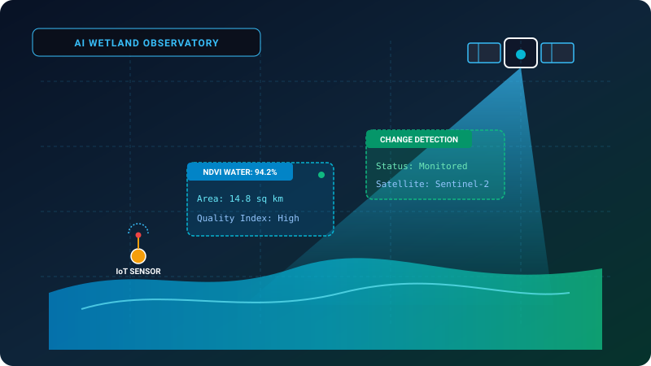

Artificial Intelligence for Wetland Monitoring and Conservation
AI & Satellite Multi-Sensor Ecological Preservation Framework
The Problem
Wetland ecosystems are rapidly shrinking due to unmonitored human encroachment, climate fluctuations, and runoff pollution, often undetected until irreversible ecological damage occurs.
The Solution
An AI-based approach for monitoring wetland ecosystems using satellite imagery, environmental sensors, GIS, and machine learning to identify environmental changes and support conservation decisions.
✔
Automated surface water boundary delineation using multi-spectral satellite imagery
✔
Temporal change detection tracking seasonal water shrinkage and vegetation indices
✔
Integration with GIS and IoT environmental sensor metrics for data-driven decisions
AI
Machine Learning
Computer Vision
Satellite Imagery
GIS / QGIS
IoT Sensors
Python